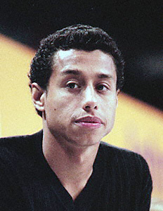

Jair Lynch (USA)
1996 Olympic PB Silver Medalist

Medal Total
Olympic Games: 1 Silver
Jair was born on October 2, 1971, in Massachusetts. He attended Stanford University on a full gymnastics scholarship and graduated in 1994 with degrees in civil engineering and urban design. He's founder and president of The Jair Lynch Companies, a real estate development firm located in Washington, DC.
Competition Results
1988
JO Nationals (Class I): 3rd AA, 1st V
1989
US Olympic Festival: 24th AA
1990
NCAA Championships: 13th AA, 6th HB, 7th PH
Winter Cup: 12th AA
1991
NCAA Championships: 3rd AA, 5th PB, 7th HB
US Olympic Festival: 1st AA
USA Championships: 16th AA
World Sports Fair: 7th AA
1992
NCAA Championships: 1st Team, 4th AA, 1st HB, 4th PH, 5th FX, 6th PB
Olympic Games: 6th Team, 6th PB
US Championships: 7th AA, 1st PB, 1st HB, 4th PH, 6th V
US Olympic Trials: 4th AA
Winter Cup: 12th AA
1993
NCAA Championships: 1st Team, 9th AA, 1st PB, 6th FX
University Games: 11th AA, 3rd PB
US Championships: 39th AA
1994
Spartan Open: 3rd AA
Winter Cup: 11th AA
1995
Atlanta Gymnastics Invitational (Pre-Olympics): 5th AA
Subway World Challenge: 5th AA
US Championships: 4th AA, 4th PH, 5th PB
US World Trials: 5th AA
Winter Cup: 12th AA
World Championships: 9th Team, 31st AA
1996
American Cup: 2nd AA
Olympic Games: 5th Team, 2nd PB
3-on-3 International: 6th Team
US Championships: 8th AA, 1st PB, 5th PH
US Olympic Trials: 6th AA
Winter Cup: 1st AA
This page was created on September
05, 2006.
© Gymn Forum